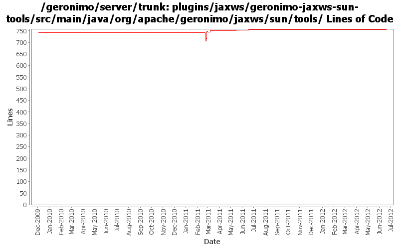

[root]/plugins/jaxws/geronimo-jaxws-sun-tools/src/main/java/org/apache/geronimo/jaxws/sun/tools

| Author | Changes | Lines of Code | Lines per Change |
|---|---|---|---|
| Totals | 33 (100.0%) | 139 (100.0%) | 4.2 |
| xuhaihong | 25 (75.8%) | 126 (90.6%) | 5.0 |
| djencks | 3 (9.1%) | 5 (3.6%) | 1.6 |
| genspring | 1 (3.0%) | 3 (2.2%) | 3.0 |
| rwonly | 1 (3.0%) | 2 (1.4%) | 2.0 |
| xiaming | 1 (3.0%) | 1 (0.7%) | 1.0 |
| kevan | 1 (3.0%) | 1 (0.7%) | 1.0 |
| dwoods | 1 (3.0%) | 1 (0.7%) | 1.0 |
GERONIMO-6304 Fix the space char issues when doing wsdl generation, for trunk
1 lines of code changed in 1 file:
GERONIMO-6240 Update to changed jline and moved shell annotations
4 lines of code changed in 2 files:
GERONIMO-6058 Replace StringBuffer usage with StringBuilder
1 lines of code changed in 1 file:
GERONIMO-6039 include geronimo-atinject_1.0_spec in the wsdlgen classpath. this allows javax.inject.Inject to be an annotation
1 lines of code changed in 1 file:
Update dependent bundles while generating WSDL files
2 lines of code changed in 1 file:
adding axis2 deployer for uddi module.
3 lines of code changed in 1 file:
GERONIMO-5955 should not generate wsdl into an ejb archive
2 lines of code changed in 1 file:
Update Axis2-SAAJ artifact name
1 lines of code changed in 1 file:
Add dependency for log API
1 lines of code changed in 1 file:
Use BundleListener Axis2ModuleRegistry to configure available Axis2 Modules, while we searched in the classpath in the past
7 lines of code changed in 1 file:
a. Enable POJO web service class enhancement on the runtime for Tomcat assembly
b. Disable web service deployer in UDDI module temporarily
3 lines of code changed in 2 files:
Fix forked mode wsgen and webservice annotation scanning, might need refract later
44 lines of code changed in 2 files:
Recover wsimport and wsgen commands, but we might find a way to manage those ri jars, actually they are not required to be installed in the OSGi runtime
23 lines of code changed in 1 file:
Convert GShell based web service commands to gogo command style
44 lines of code changed in 3 files:
cf OPENEJB-1252 replace file.toURL() with file.toURI().toURL()
1 lines of code changed in 1 file:
update to match jaxws_2.2_spec being used now
1 lines of code changed in 1 file:
GERONIMO-4967 Enable Axis2 plugin in Geronimo 3.0
1. Rename some packages to avoid the exporting conflict
2. Use those bundlized dependency
0 lines of code changed in 12 files: